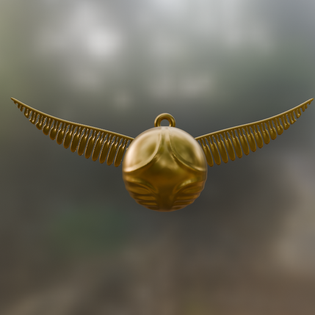

O patrono de Harry Potter é um cervo, o mesmo animal em que seu pai, Tiago Potter, conseguia se transformar.
è verdade, o patrono de seu pai era um cervo
O patrono de Harry Potter é um cervo, o mesmo animal em que seu pai, Tiago Potter, conseguia se transformar.
è verdade, o patrono de seu pai era um cervo

O Mapa do Maroto foi criado por Tiago Potter, Sirius Black, Remus Lupin e Pedro Pettigrew durante o primeiro ano deles em Hogwarts.
Falso. Eles criaram o mapa em Hogwarts, mas não no primeiro ano. O grupo levou anos para mapear o castelo e dominar a magia necessária, terminando o objeto apenas entre o quinto e o sétimo ano de escola.

O pomo de ouro tem memória corporal e lembra-se da primeira pessoa que o tocou.
Verdadeiro. O pomo de ouro possui memória corporal. Ele é fabricado para reconhecer o primeiro bruxo a tocá-lo com a pele nua, o que serve para resolver disputas de captura em jogos de Quadribol.

Voldemort e Harry são parentes distantes
Verdadeiro. Ambos descendem de uma antiga família de bruxos, os Peverell. A mãe de Voldemort (Mérope Gaunt) vem da linhagem de Ignoto Peverell, enquanto Harry é descendente direto de Cadmo Peverell através da Capa da Invisibilidade.